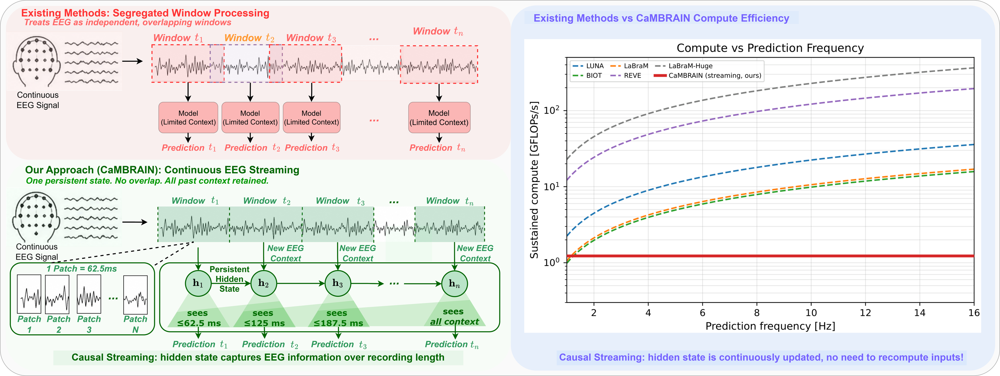
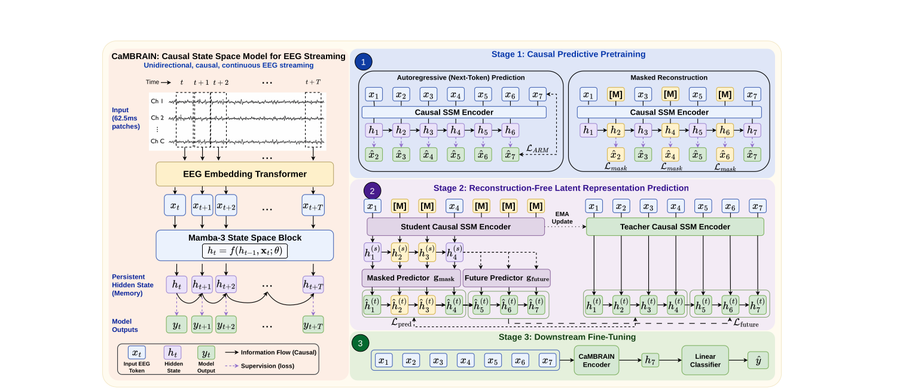

Figure 1. Existing methods (top) operate on overlapping sliding windows, repeatedly recomputing features over shared regions and limiting context to short segments. In contrast, CaMBRAIN (bottom) enables continuous EEG inference by maintaining a persistent hidden state that incrementally compresses all past context, eliminating redundant computation and enabling efficient, global temporal EEG understanding in real time (right). Window sizes not to scale.
Continuous streaming inference on CHB-MIT. CaMBRAIN updates a single fixed-size hidden state at 16 Hz (62.5 ms patches). Predictions stream out at patch arrival rate — no sliding windows, no recomputation.
Electroencephalography (EEG) is a critical, non-invasive method to monitor electrical brain activity. EEGs can span anywhere from a couple seconds to multiple hours, posing a major hurdle for existing deep learning methods: (1) existing EEG models are predominantly built on attention, incurring quadratic scaling as sequence length increases, and (2) raw EEG must be processed in a sliding-window fashion due to fixed-length input requirements, preventing global understanding of the entire signal.
We propose CaMBRAIN — the first causal, Mamba-based state space model (SSM) capable of real-time inference of EEG, arguing that bidirectional approaches are needlessly expensive given the causal, unidirectional nature of EEG. Training such a model is non-trivial: crucial EEG events can be extremely brief — within fractions of a second — yet separated by long intervals spanning minutes. Reconstruction-based self-supervised objectives are not well suited for streaming SSMs; they fail to train the hidden state to retain the salient long-range context needed for streaming inference.
We therefore introduce a multi-stage self-supervised training pipeline tailored to encourage long-range memory retention while preserving the linear-time complexity of state space models. CaMBRAIN achieves state-of-the-art results across 3 EEG datasets with more than 10× higher throughput than existing models, enabling long-range, continuous inference of variable-length EEG signals.

Figure 2. Overview of CaMBRAIN. CaMBRAIN is a causal state space model that processes EEG in 62.5 ms patches using a unidirectional state space model with a persistent hidden state. We train it with a three-stage pipeline: (1) causal predictive pretraining with autoregressive and masked reconstruction objectives to learn local temporal structure, (2) decoder-free latent JEPA training using a student–teacher framework to enforce long-range consistency and memory retention in the hidden state, and (3) downstream fine-tuning for task-specific prediction. This design enables real-time, continuous inference over arbitrarily long EEG recordings.
O(1)-size hidden state per 62.5 ms patch.The arXiv identifier will be added once the preprint is announced. Until then, please cite by title and authors.
We thank the UCF Center for Research in Computer Vision and the Loma Linda University Department of Neurology for institutional support. The authors gratefully acknowledge compute resources from UCF's Newton cluster (NSF MRI award) used to train CaMBRAIN.